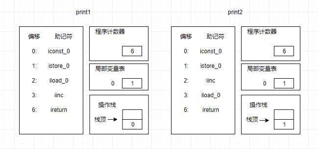

在本篇章中会从参数传递、++ 和 += 运算、try/catch、循环、switch 等方面讲述来讲述一下，在 Java 中的一些逻辑运算规则
参数传递
在 Java 中，方法参数传递过程，其实是传递一个副本值过程，所以有2种结果
- 基本数据类型和 String 都是只修改的副本值。所以，对参数不会发生改变
- 引用类型是其引用地址不会修改，但副本地址也指向了原来的值，因此引用类型属性值是会发生修改的。
总结一句话就是：基本数据类型和String类型，值不会；引用类型引用地址不变
上代码进行说明:
class Person {
private String name;
private int age;
public String getName() {
return name;
}
public void setName(String name) {
this.name = name;
}
public int getAge() {
return age;
}
public void setAge(int age) {
this.age = age;
}
}
public class Test {
public static void main(String[] args) {
Person person = new Person();
person.setName("张三");
person.setAge(10);
String name = "张三";
int age = 10;
System.out.println("Person: " + person.getName() + "," + person.getAge());
System.out.println("main : " + name + "," + age);
System.out.println("==============================");
stringChange(name,age,person);
System.out.println("Person: " + person.getName() + "," + person.getAge());
System.out.println("main : " + name + "," + age);
}
public static void stringChange(String name, int age, Person person) {
name = "-----";
age = 0;
person.setName("-----");
person.setAge(0);
}
}执行结果如下：
Person: 张三,10
main : 张三,10
==============================
Person: -----,0
main : 张三,10由上代码得出：基本数据类型和String类型，不会改变；引用类型其属性会改变
++ 和 += 运算
该小节是重点，面试一定会出现的考点，可要记牢了
i++ 和 ++i 的区别
i++：先赋值，在相加，
++i：先相加，在赋值
实战以下，看以下代码
public class Test {
public static int print1() {
int i = 0;
i++;
return i++;
}
public static int print2() {
int i = 0;
i++;
return ++i;
}
public static void main(String[] args) {
System.out.println(print1());
System.out.println(print2());
int i=0;
System.out.println(i++);
System.out.println(++i);
}
}执行结果为：1，2，0，2；
我们获取以下方法执行时的指令集
public static int print1() {
int i = 0;
return i++;
}
public static int print2() {
int i = 0;
return ++i;
}查看汇编指令如
public static int print1();
Code:
0: iconst_0 //将int类型常量0压入栈
1: istore_0 //将int类型值存入局部变量
2: iload_0 //第一个int型局部变量进栈
3: iinc 0, 1 //把一个常量值加到一个int类型的局部变量上，0 表示局部变量索引
6: ireturn //将操作数栈栈顶的值返回个此方法的调用者
LineNumberTable:
line 5: 0
line 6: 2
public static int print2();
Code:
0: iconst_0 //将int类型常量0压入栈
1: istore_0 //将int类型值存入局部变量
2: iinc 0, 1 //把一个常量值加到一个int类型的局部变量上，0 表示局部变量索引
5: iload_0 //第一个int型局部变量进栈
6: ireturn //将操作数栈栈顶的值返回个此方法的调用者
LineNumberTable:
line 5: 0
line 6: 2iload_0指将整型指存入操作数栈iinc用于实现局部变量的自增操作。在所有字节码指令中，只有该指令可直接用于操作局部变量。ireturn是将操作数栈栈顶的值返回个此方法的调用者
i=i++到底是怎么执行的
public class Inc {
public static void main(String[] args) {
Inc inc = new Inc();
int i = 0;
inc.fermin(i);
i= i ++;
System.out.println(i);
}
void fermin(int i){
i++;
}
}
//答案是0; inc.fermin(i); 是一个干扰项，考值传递还是引用传递i=i+1 和 i+=1 的区别
i+=1 会进行自动类型转换
try/catch
在 Java 中 try/catch/finally 的语法中的 finally 块的代码一定会执行
- 当finally中有return时，不管什么类型，都会会影响try块或catch块中的
返回值 - 当finally中没有return时，不管什么类型，都不会影响try块或catch块中的
返回值
public static String fun(String key) {
try {
System.out.println(key="a");
return key;
}catch (Exception e) {
System.out.println(key="b");
return key;
}finally {
System.out.println(key="c");
return key;
}
}
public static void main(String[] argc) {
System.out.println(fun("0"));
}执行结果为 ：a、c、c
public static int fun(int i) {
int[] arr = {i};
try {
System.out.println(arr[0]=3);
return arr[0];
}catch (Exception e) {
System.out.println(arr[0]=20);
return arr[0];
}finally {
System.out.println(arr[0]=300);
}
}
public static void main(String[] argc) {
System.out.println(fun(0));
}执行结果为 ：3、300、3
for/do/while
在Java中有3种循环方式如下：
- for 循环
- while 循环：当满足条件时， 才执行执行一次代码块，不满足条件，结束循环
- do/while 循环： 先执行一次代码块 ，在判读是否满足条件，不满足条件，结束循环
continue和break 的区别
- continue： 表示终止本次循环的执行
- break ： 表示结束当前层整个循环，嵌套循环时外层不受影响
对于for循环中条件的执行顺序是怎么样的，你知道吗？比如; for(i=0;i<10;i++){}
其实很简单，普通for顺序如下：
- 先对循环变量赋初始值，如：i=0
- 在执行 循环判读是否满足条件
- 满足条件，则执行循环体
- 在执行循环变量，自增或自减操作
- 再循环2，3，4步。知道不满足判读条件，跳出循环
public class Test {
static boolean foo(char c) {
System.out.print(c);
return true;
}
public static void main(String[] args) {
int i=0;
for(foo('A');foo('B')&&i<2;foo('C')) {
i++;
foo('D');
}
}
}
执行结果：
ABDCBDCB输出结果你答对了吗？
switch
在Java中，switch 是从选项值相匹配的 case 标签处开始执行直到遇到 break 语句， 或者执行到 switch 语句的结束处为止。
注意：
- 有可能触发多个 case 分支 。 如果在 case 分支语句的末尾没有 break 语句 ， 那么就 会接着执行下一个 case 分支语句
- continue：该关键字不能作用于 switch 语句中
- switch 条件判断语句中使用对象：支持：char, byte, short, int, Character, Byte, Short, Integer, String, or an enum，不支持 long。支持String 从 Java 7 开始
public class Test {
public static void fun(int i) {
switch (i) {
case 0:
System.out.println("case 0:");
case 1:
System.out.println("case 1:");
case 2:
System.out.println("case 2:");
// break ; 1
case 3:
System.out.println("case 3:");
// continue; 2
case 4:
System.out.println("case 4:");
}
}
public static void main(String[] args) {
fun(1);
}
}执行结果：
case 1:
case 2:
case 3:
case 4:如果有break 呢？ 比如只取消 1处 的注释
此时输出：
case 1:
case 2:所以，我们可以理解为：switch，其实就是一个case的循环，不过只能执行一次。break则可以中断case 循环。
如果有continue呢？比如只取消 2 处的注释
我们发现什么，发现提示报错，为什么？？因为continue 不能再switch中执行。除非外层有有循环体包裹
public static void fun(int i) {
for (int j = i; j < 5; j++) {
switch (j) {
case 0:
System.out.println("case 0: j="+j);
case 1:
System.out.println("case 1: j="+j);
case 2:
System.out.println("case 2: j="+j);
break;
case 3:
System.out.println("case 3: j="+j);
continue;
case 4:
System.out.println("case 4: j="+j);
}
System.out.println("------");
}
}
public static void main(String[] args) {
fun(2);
}执行结果：
case 2: j=2
------
case 3: j=3
case 4: j=4
------发现没有输出：case 3: j=2 ，并且多了一行“——”
这说明 switch中 的 break， 对for循环时无效的，只作用于switch 上，所以在终止switch循环后，还会执行for循环中后续的代码